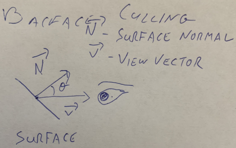

Chapter 8 Backface Culling
Section 8.1 Vectors
A vector 1 is a unit that has both direction and magnitude (size). Vectors are written like so: \(\lt x, y, z>\) Notice that vector components are placed inside \(\lt >\) to differentiate them from points. A point only describes a single point in space, whereas a vector describes a relationship between 2 points (often, not always, an arbitrary point and the origin)
You can think of a vector as describing how you would get from point \(A\) to point \(B\text{.}\) For example, consider the following two points:
\begin{equation*}
\begin{aligned}
p0 \amp= (4, 10, 0) \\
p1 \amp= (6, 5, 23) \\
\end{aligned}
\end{equation*}
To get from \(p0\) to \(p1\text{,}\) you would have to move +2 in x, -5 in y and +23 in z, so we would write the vector as:
\begin{equation*}
\overrightarrow{A} = \lt 2, -5, 23>
\end{equation*}
The vector from \(p1\) to \(p0\) moves in the opposite direction, and would be written as:
\begin{equation*}
\overrightarrow{B} = \lt -2, 5, -23>
\end{equation*}
Generally, you can find the vector between 2 points by subtraction. Notationally, vectors are written with a \(\rightarrow\) as seen above.
Section 8.2 The Algorithm
As mentioend before, backface culling is the process of removing the backwards facing surfaces from our rendering engine. In order to do this, we need to define 2 vectors:
- \(\overrightarrow{N}\text{:}\) The surface normal, a vector perpendicular to the plane of the polygon (or surface), pointing outward.
- \(\overrightarrow{V}\text{:}\) The view vector, a vector pointing out from the plane of the polygon (or surface) into the "eye" of the observer.

We can tell if a surface is front or back facing based on the value of \(\theta\text{,}\) the angle between \(\overrightarrow{N}\) and \(\overrightarrow{V}\text{.}\) When \(-90 \lt \theta \lt 90\text{,}\) then the surface is visible to the observer. Outside of that range, the surface is pointing away from the observer and is thus a backface. While it is referred to as backface culling, this process could be more accurately described as frontface including. We don't actually remove the backfaces from our polygon lists (if we rotate the shape, then those faces may no longer be back facing!), rather, we check and only draw the polygons facing forward. We can break up backface culling as follows:- Calculate \(\overrightarrow{N}\)
- Calculate \(\theta\)
- IF \(-90 \lt \theta \lt 90\text{,}\) draw the triangle.
Subsection 8.2.1 Calculate \(\overrightarrow{N}\)
We can find the surface normal by taking the cross product of two vectors along the edges of the polygon provided that they share one endpoint and point in opposite directions. If we have a trainlge like this:  \(\overrightarrow{A}\) is the vector from \(P_0\) to \(P_1\) and \(\overrightarrow{B}\) is the vector from \(P_0\) to \(P_2\text{.}\) We can get the cross procuct like this:
\(\overrightarrow{A}\) is the vector from \(P_0\) to \(P_1\) and \(\overrightarrow{B}\) is the vector from \(P_0\) to \(P_2\text{.}\) We can get the cross procuct like this:
\begin{equation*}
\begin{aligned}
\overrightarrow{A} \amp= P_1 - P_0 = \lt x_1 - x_0, y_1 - y_0, z_1 - z_0> \\
\overrightarrow{B} \amp= P_2 - P_0 = \lt x_2 - x_0, y_2 - y_0, z_2 - z_0> \\
\overrightarrow{N} \amp= \overrightarrow{A} \times \overrightarrow{B} \\
\overrightarrow{N} \amp= \lt a_yb_z - a_zb_y, a_zb_x - a_xb_z, a_xb_y - a_yb_x>
\end{aligned}
\end{equation*}
Subsection 8.2.2 Calculate \(\theta\)
Before we figure out \(\theta\text{,}\) we need to discuss the view vector (\(\overrightarrow{V}\)). \(\overrightarrow{V}\) is supposed to be a vector that comes out of the plane of a surface and into the observer's eye. So the question is, what is the relationship between the observer and the surface?
For right now, we will assume that the observer is very very very far away from the object. This assumption means that moving left, right, up or down will not have any perceptible effect on what part of the object you are looking at. Think about looking up at the moon, if you move around, you don't start to see a new part of the moon. It looks the same, even if you went from Staten Island up to the Bronx, the moon would look the same. Programatically, this means that we can ignore any changes along the x or y axes.
So z is the important axis, since that determines if you are in front of or behind an object. Remember that z moves in a positive direction out from the screen towards the viewer, so \(\overrightarrow{V}\text{,}\) the vector from the object to the viewer, should have a positive z component. For right now we can use \(\overrightarrow{V} = \lt 0, 0, 1>\) for the following reasons:
- We don't care about changes in x and y, so leaving them at 0 is fine.
- We need a positive z.
- By giving z the value of 1, the total mangnitude of \(\overrightarrow{V}\) is 1. This is referred to as a \(normalized\) vector. It's not very important right now, but it will be later on, so we might as well start here.
Now that we know both \(\overrightarrow{N}\) and \(\overrightarrow{V}\text{,}\) there's a little bit of vector math we can use to our advantage to help us find \(\theta\text{.}\) The dot prduct 2 of \(\overrightarrow{N}\) and \(\overrightarrow{V}\) is a scalar (not a vector) value equal to the cosine of the angle between them times the product of each vector's magnitude (\(M\)). Or, more succintly: \(\overrightarrow{N} \cdot \overrightarrow{V} = Mcos\theta\text{.}\) Given two vectors, you can calculate the dot product like so:
\begin{equation*}
\overrightarrow{N} \cdot \overrightarrow{V} = Mcos\theta = n_xv_x + n_yv_y + n_zv_z
\end{equation*}
There are properties of \(cos\theta\text{,}\) that can help us out a lot. Namely, \(cos\theta > 0\) when \(-90 \lt \theta \lt 90\) which is conveniently, exactly the range for surfaces we want to see. So it turns out, we only care about whether or not the dot product is positive or negative. If it's positive, then the surface is front facing, and we should draw it, if it's negative, we pass. And since mangnitude is always positive, we don't actually need to worry about it for this calculation (later on, when we get to lighting, we will care about mangnitude, but that's a problem for future us, who will be smarter than present us).
Subsection 8.2.3 Putting it all together
Given any triangle starting at \(P_0\text{:}\)
- Calculate \(\overrightarrow{N} = \overrightarrow{A} \times \overrightarrow{B}\text{,}\) where \(\overrightarrow{A} = P_1 - P_0\text{,}\) and \(\overrightarrow{B} = P_2 - P_0\text{.}\)
- Calculate \(\overrightarrow{N} \cdot \overrightarrow{V}\text{,}\) where \(\overrightarrow{V} = \lt 0, 0, 1>\)
- If \(\overrightarrow{N} \cdot \overrightarrow{V} > 0\text{,}\) draw the triangle.
en.wikipedia.org/wiki/Euclidean_vectorwww.mathsisfun.com/algebra/vectors-dot-product.html